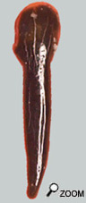
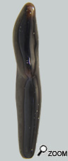
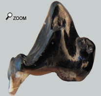
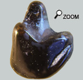
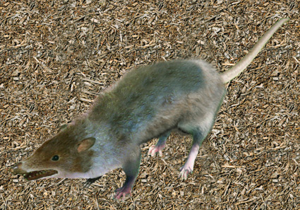

|
  |
||
 |
|
||
|
Les dents de devant...  
Belles trouvailles...  Les Echinosoriciés (Hérissons sans piquants) ont été retrouvés surune assez longue période. La dent la plus à droite est une prémolaire inférieure 4. Son aspect piquant mais robuste est concordant avec les dents des gymnures du miocène d’Europe. Pour être plus précis, cette dent correspond à celle d'un Galericinae. Le genre restant à définir, mais ce serait plutôt un Galerix... Et puis la dent de gauche est une première molaire inférieure  Parmi les insectivores ces dents sont reconnaissables déjà par leur taille nettement supérieure à celle des autres insectivores des faluns. Ce sont également les dents les plus robustes.
Des hérisssons à poils!... Au miocène, les éracinidés sont des animaux fréquents dans les faunes européennes.  La fréquence des échinosorex dans les faunes miocène au détriment des animaux à piquants pourrait avoir une raison finalement inattendue. En effet la connaissance des Echinosorex du miocène repose sur des gisements où ils ont été retrouvés assez nombreux: les remplissages de fosses karstiques. Or la concentration de ces restes est généralement attribuée à des rapaces, qui ont abandonné les os des proies pendant des années au même endroit. Et comme la présence de piquants chez les hérissons décourage vivement les prédateurs et on comprend que ces animaux aient été moins chassés que les échinosorex. Et donc il est possible que les animaux à piquants aient été aussi nombreux que les échinosorex mais qu’ils aient été simplement peu rassemblés et peu fossilisés! Pour ce qui concerne la période MN3 et MN 5 des faluns, les espèces recensées en Europe appartiennent pour la plupart à Lanthanotherium et à Galerix. Ces insectivores devaient certainement avoir une écologie comparable aux échinosorex actuels avec des apports alimentaires variés à base d’invertébrés (insectes, vers) mais aussi avec quelques contributions marginales de vertébrés comme des amphibiens ou des poissons pour les espèces liées à un écosystème proche de l’eau douce… Pour autant la présence des hérissons vrais est attestée de manière continue depuis la fin de l’éocène, mais avec des restes tellement rares que cette faune est assez mal connue. Un gros gymnure dans les faluns?..
Il m'a fallu longtemps avant de pouvoir proposer une détermination. Il a été nécessaire de passer en revue toutes les familles de mammifères repertoriées dans les faluns et procéder par élimination. Il n'est resté que quelques animaux de taille compatible avec cet os. Ensuite il a fallu comparer l'os avec un calcanéum d'animal déjà répertorié pour arriver enfin avec un résultat convainquant. Il pourrait s'agit d'un calcanéum d'un echinosorex primitif (Probablement un Galerix sp?). Reste que cet os est un peu grand pour un insectivore. Il doit s'agir d'un animal un peu plus gros que ceux déjà connus, comme souvent l'évolution en fait apparaitre au cours du temps. |
|||